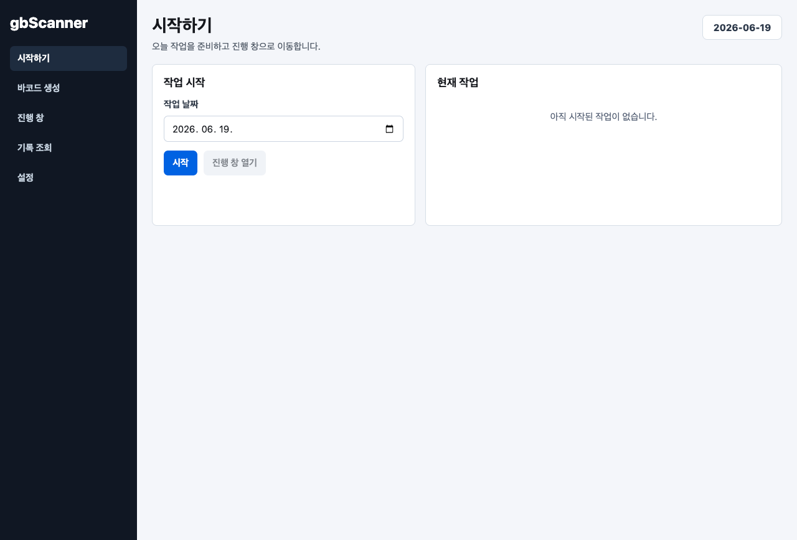
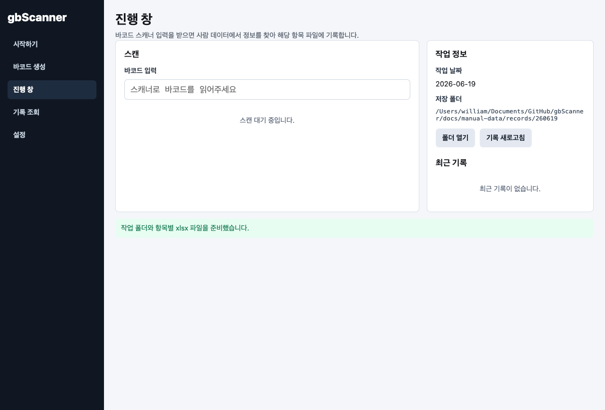
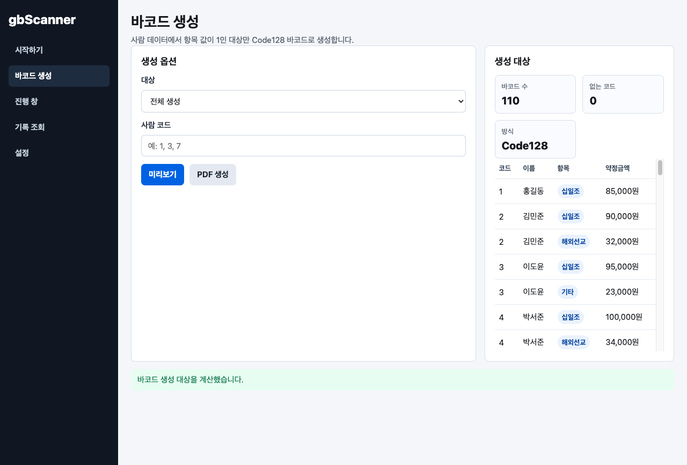
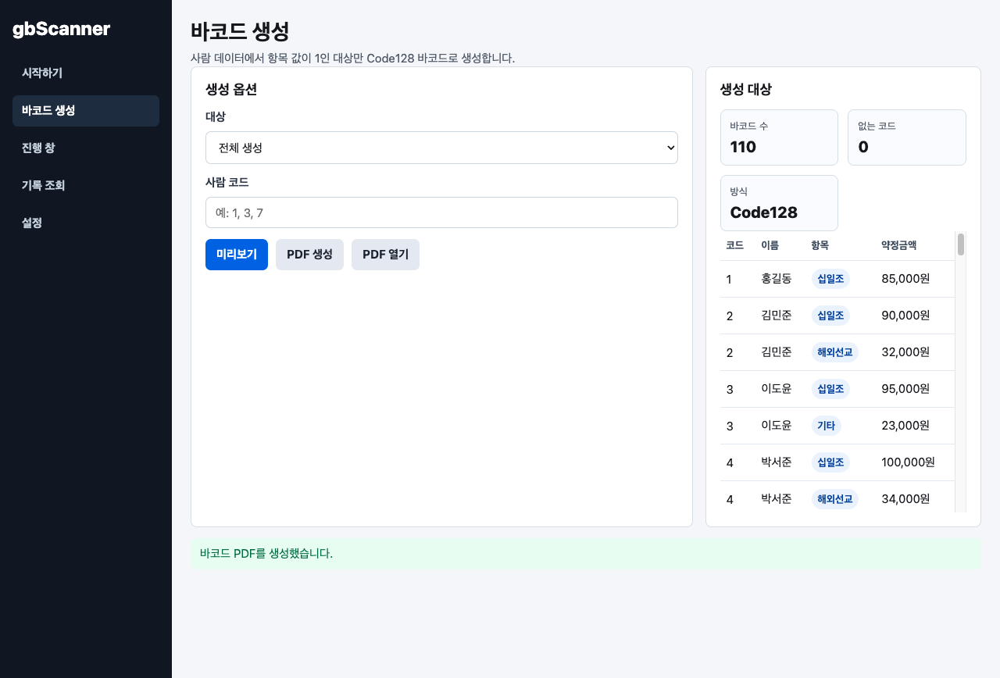
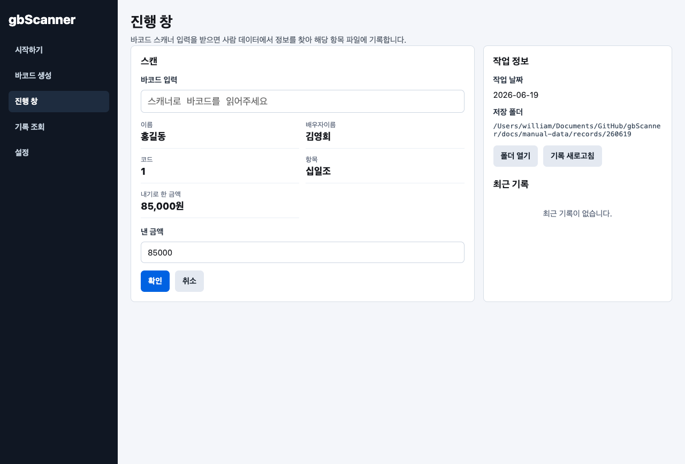
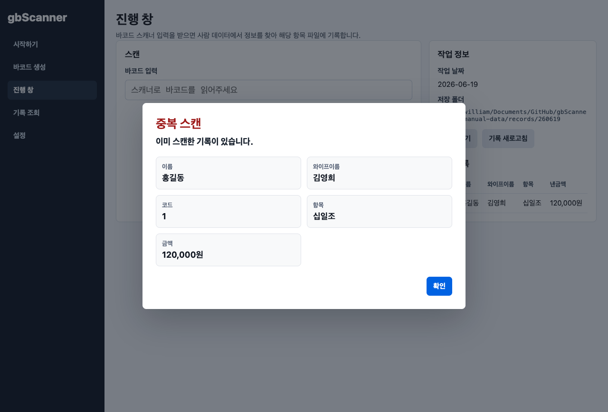
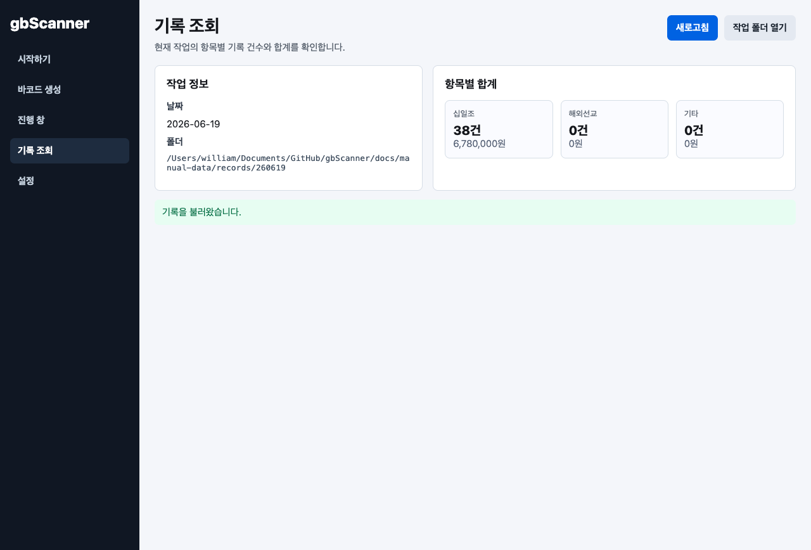
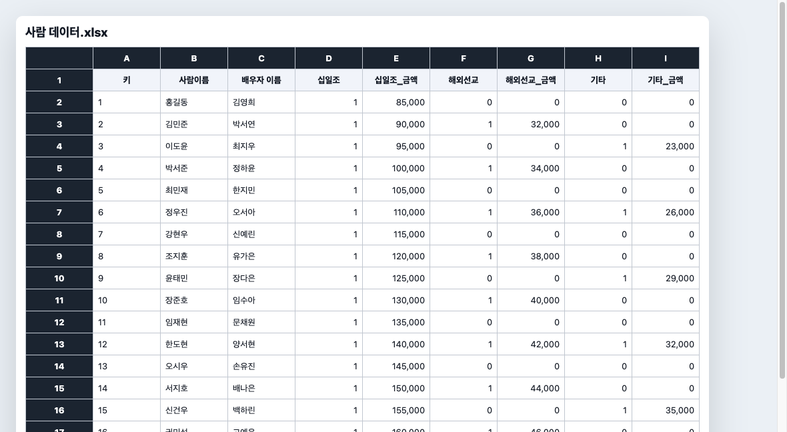
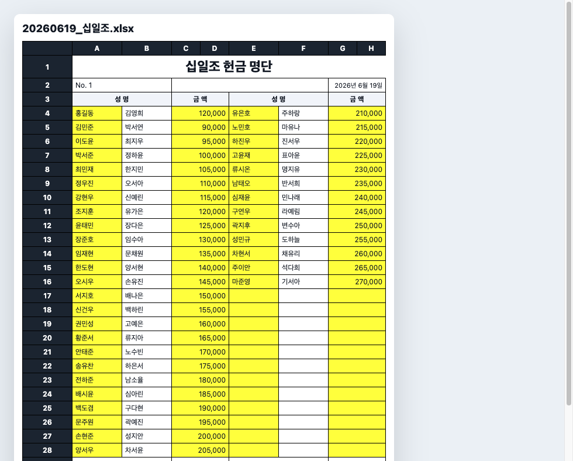
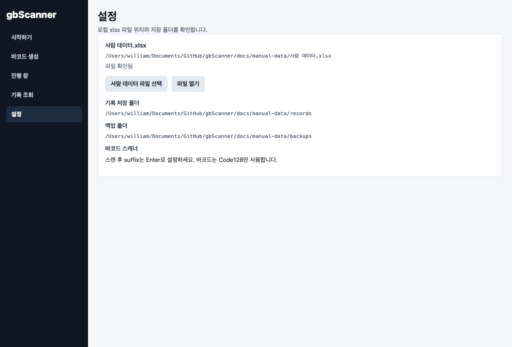

gbScanner 사용자 매뉴얼
사람 데이터.xlsx로 Code128 바코드를 만들고, 매주 스캔한 봉투 정보를 날짜별 xlsx 기록 파일에 저장하는 로컬 데스크톱 앱 사용 안내입니다.
1. 사람 데이터 준비
2. 바코드 PDF 출력
3. 날짜별 작업 시작
4. 스캔 후 금액 저장
5. 기록 엑셀 확인

화면
시작하기
- 작업 날짜를 확인하고 시작 버튼을 누릅니다.
- 날짜별 폴더와 십일조, 해외선교, 기타 xlsx 파일이 자동으로 준비됩니다.
예: 2026년 6월 19일은 260619 폴더와 20260619_십일조.xlsx 파일들을 만듭니다.

화면
진행 창
- 스캐너 입력을 기다리는 화면입니다.
- 테스트 중에는 바코드 값을 직접 입력하고 Enter를 눌러도 됩니다.

화면
바코드 생성
- 전체 생성 또는 사람 코드 일부 생성을 선택합니다.
- 사람 데이터에서 값이 1인 항목만 Code128 바코드로 생성합니다.
- PDF 생성 후 출력물을 사용할 수 있습니다.

화면
바코드 PDF 생성 완료
- PDF에는 이름, 배우자 이름, 항목, 바코드 이미지가 들어갑니다.
- 코드와 약정 금액은 출력물에서 제외됩니다.

화면
스캔 후 금액 확인
- 스캔하면 이름, 배우자 이름, 코드, 항목, 약정 금액이 표시됩니다.
- 낸 금액만 수정해서 해당일 기록에 저장합니다.
- 사람 데이터.xlsx의 약정 금액은 바뀌지 않습니다.

화면
중복 스캔 경고
- 이미 저장된 바코드를 다시 스캔하면 저장 전에 경고창이 뜹니다.
- 경고창에는 스캔한 사람 정보와 금액이 함께 표시됩니다.

화면
기록 조회
- 현재 작업의 항목별 기록 건수와 합계를 봅니다.
- 작업 폴더 열기로 생성된 xlsx 파일을 확인할 수 있습니다.
엑셀
사람 데이터.xlsx 구조
- 키와 사람이름은 필수입니다.
- 배우자 이름, 항목 여부, 항목별 약정 금액을 함께 관리합니다.
- 십일조, 해외선교, 기타 값이 1이면 해당 항목 바코드가 만들어집니다.

엑셀
기록 xlsx 화면
- 4행부터 왼쪽 영역을 위에서 아래로 채우고, 25명이 차면 오른쪽 영역으로 이어집니다.
- 오른쪽까지 차면 아래쪽에 다음 명단 영역이 자동으로 만들어집니다.
- 소계와 합계가 자동으로 계산됩니다.


화면
설정
- 사람 데이터 파일, 기록 저장 폴더, 백업 폴더 위치를 확인합니다.
- 스캐너는 스캔 후 Enter가 입력되도록 설정하면 됩니다.